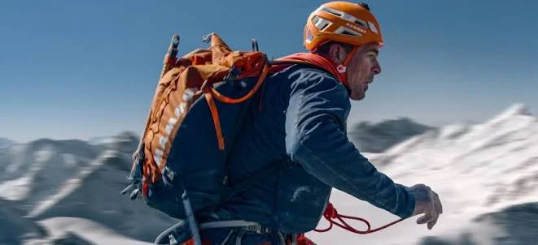

Elizabeth Chai Vasarhelyi ve Jimmy Chin'in 2018 yapımı filmi, Alex Honnold'un Yosemite'deki El Capitan'a serbest solo tırmanışını izliyor. Tırmanışın yanı sıra aylar süren hazırlığı, riskleri ve bu hedefin kişisel yaşam üzerindeki etkilerini de takip ediyor.